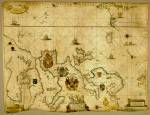

Pascaarte van alle de zee-custen van Europa. Nieulijcx beschreven en verbetert door Willem, Pieter en Joan Blaeu. [Schaal circa 1:7.500.000.] Kopergravure op perkament, gekleurd, 690 x 880 mm. Amsterdam, 1677. -- (COLLBN 003-012-004)
Zeekaarten behoren, evenals kompas en dieplood, tot het instrumentarium dat de zeeman bij de navigatie ten dienste staat. Voor het ontstaan van de zeekaart moeten we terug naar het einde van de dertiende eeuw, toen in het Middellandse-Zeegebied voor het eerst melding werd gemaakt van het gebruik van zogenaamde portolanen, havenkaarten, waarvan de naam is afgeleid van de ‘portolano’, de geschreven aanwijzing voor de scheepvaart. Wat de cartografische vormgeving betreft, kunnen we vanaf het begin spreken van een standaardtype, waaraan in de loop der eeuwen weinig werd veranderd. De ondergrond wordt gevormd door een net van meestal zestien windrozen, met behulp waarvan de zeeman de richting van de te varen koers kon bepalen. De zeekaart toont van het land slechts de kusten met belangrijke havenplaatsen, riviermondingen, ondiepten en kapen.
Onder invloed van de nieuwe ontdekkingen begon de wereldhandel zich tegen het einde van de vijftiende eeuw vanuit het Middellandse-Zeegebied te verplaatsen naar de havens van de Atlantische kust; eerst speelden Spanje en Portugal daarbij de hoofdrol, later namen ook noordelijker gelegen havens eraan deel. De aandacht van de Nederlandse zeelieden was aanvankelijk gericht op de Europese kusten, en met name die van de Noord- en de Oostzee, waarbij men de informatie over kusten en routes eerst mondeling en later schriftelijk heeft overgedragen. Spoedig verschenen ook de eerste gedrukte kustbeschrijvingen in de Nederlanden. In de loop van de zestiende eeuw nemen deze streken een leidende plaats in in de vervaardiging van zeekaarten en vooral in het uitgeven en drukken ervan. Enkele voorbeelden mogen dat aantonen: de Caerte van Oostlant door Cornelis Anthonisz uit 1543, waarvan slechts één exemplaar van een latere editie uit circa 1560 bewaard is gebleven, de wereldkaart met ‘wassende’ breedtegraden van Gerard Mercator (1569) en de eerste zeeatlas van Lucas Jansz Waghenaer, Spieghel der zeevaerdt van 1584. Amsterdam ontwikkelde zich zo tegen het einde van de zestiende eeuw tot het wereldcentrum van de cartografie en bleef dat tot circa 1680, toen de Franse hydrografie de leiding overnam. Uit de nadagen van deze bloeitijd dateert deze op perkament gedrukte paskaart van Europa, van de drie kleinzonen van de grootste Nederlandse cartograaf, Willem Jansz Blaeu (1571-1638), die in 1606 de kaart van de Europese kusten van Cornelis Doedtsz had uitgegeven. Uiteindelijk gaat deze kaart uit 1677 daarop terug.
Literatuur
- D. Howse and M. Sanderson, The sea chart. A historical survey based on the collections in the National Maritime Museum. Newton Abbot 1973.
- G. Schilder, ‘Willem Janszoon Blaeu’s map of Europe (1606). A recent discovery in England’, in: Imago mundi, 28 (1976), p. 9-20.
- C. Koeman, Geschiedenis van de kartografie van Nederland. Zes eeuwen land- en zeekaarten en stadsplattegronden. Alphen aan den Rijn 1983, p. 201 225.
- Lucas Jansz. Waghenaer van Enckhuijsen. De maritieme cartografie in de Nederlanden in de zestiende en het begin van de zeventiende eeuw. Enkhuizen 1984.
- M. de la Roncière et Michel Mollat du Jourdin, Les portulans. Cartes marines du XIIIe au XVIIe siècle. Fribourg 1984.
| vorige pagina | top pagina |